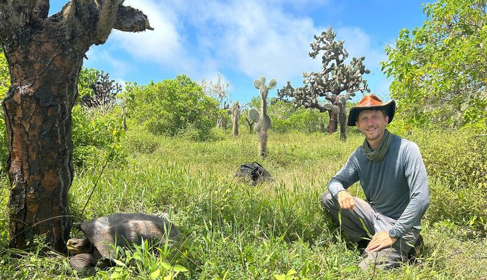
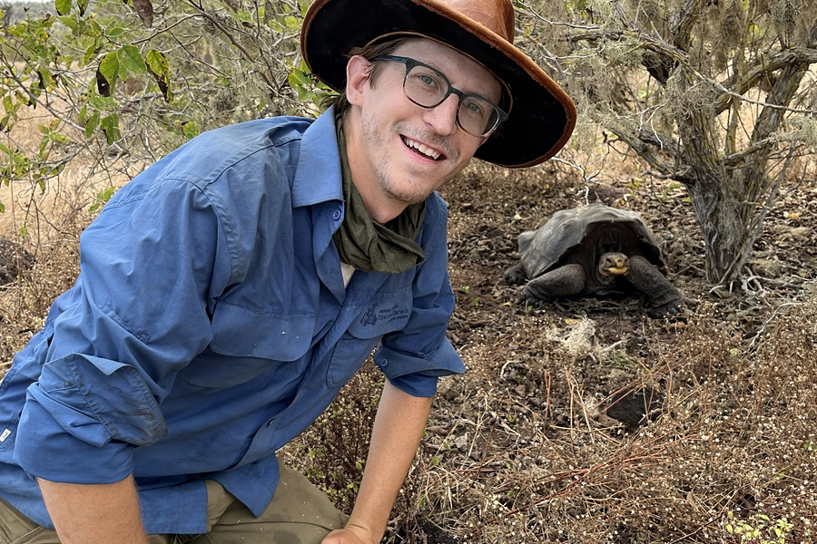
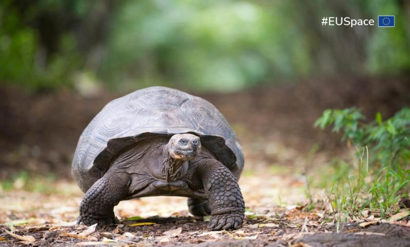
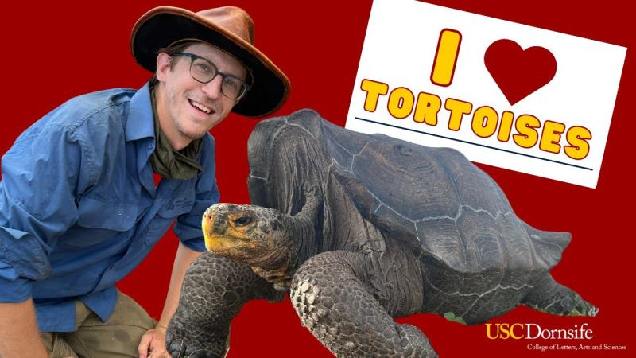
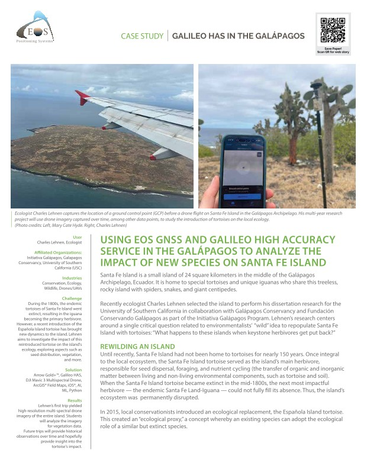
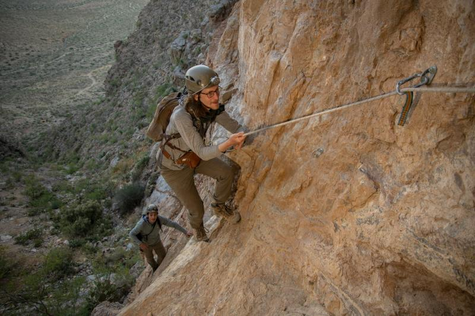
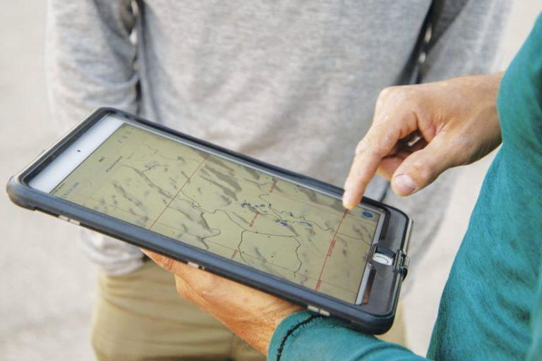

Media
Research and teaching work featured in press, institutional profiles, and industry publications — from satellite navigation agencies to science communication outlets.

<span class="media-outlet-badge">USC CET</span><span class="media-type-tag tag-article">Article</span>
<div class="media-card-title">"What a Great Teaching Idea: Supporting Student Engagement"</div>
<div class="media-card-blurb">Featured by USC's Center for Excellence in Teaching for developing active learning strategies and evidence-based pedagogy in ecology and biology courses, including quantitative programming curricula built from the ground up.</div>
<span class="media-outlet-badge">University of Minnesota</span><span class="media-type-tag tag-spotlight">Profile</span>
<div class="media-card-title">"The Making of a Field Ecologist"</div>
<div class="media-card-blurb">The University of Minnesota profiles how formative experiences — from bat surveys in New Mexico to a Galápagos National Park internship — set the course for doctoral research in community ecology and conservation biology.</div>
<span class="media-outlet-badge">UMN College of Biological Sciences</span><span class="media-type-tag tag-spotlight">Alumni Spotlight</span>
<div class="media-card-title">"Dean's Scholars Alumni Spotlight: Charles Lehnen"</div>
<div class="media-card-blurb">Recognized by the UMN College of Biological Sciences as a Dean's Scholar, this profile traces the path from undergraduate immunology research to field ecology across the Americas and the Galápagos.</div>
<span class="media-outlet-badge">EU Agency for the Space Programme</span><span class="media-type-tag tag-article">Article</span>
<div class="media-card-title">"Reviving Ecosystems: How Galileo High Accuracy Service Aids Galápagos Tortoise Reintroduction"</div>
<div class="media-card-blurb">The European Union Agency for the Space Programme highlights how centimeter-accurate GNSS positioning tracks the movements of reintroduced <em>Chelonoidis hoodensis</em> across Santa Fe Island, enabling the first fine-scale habitat use study of rewilded tortoises in the archipelago.</div>
<span class="media-outlet-badge">USC Dornsife</span><span class="media-type-tag tag-video">Video</span>
<div class="media-card-title">"Tortoise Research: From USC to Galápagos"</div>
<div class="media-card-blurb">A short documentary from USC Dornsife College of Letters, Arts and Sciences following fieldwork across the Galápagos, capturing the scale of the Santa Fe Island tortoise reintroduction project and the international team of researchers and partners working to restore a long-absent ecological role.</div>
<span class="media-outlet-badge">USC JEP STEM Programs</span><span class="media-type-tag tag-video">Video Series</span>
<div class="media-card-title">"USC WonderKids Program Videos"</div>
<div class="media-card-blurb">A video series documenting the USC JEP STEM WonderKids afterschool program — a semester-long virtual curriculum designed to expose K–5 students to diverse scientific careers through guest speakers, lab tours, and hands-on experiments from scientists across disciplines and backgrounds.</div>
<span class="media-outlet-badge">EOS GNSS</span><span class="media-type-tag tag-article">Article</span>
<div class="media-card-title">"Do Giant Tortoises Make Good Neighbors?"</div>
<div class="media-card-blurb">EOS GNSS profiles the use of high-accuracy GPS receivers to monitor newly reintroduced Española Giant Tortoises on Santa Fe Island — documenting movement ecology, habitat selection, and inter-individual variation across the first seasons of the reintroduction.</div>
<span class="media-outlet-badge">Esri ArcNews</span><span class="media-type-tag tag-article">Article</span>
<div class="media-card-title">"Where the Bats Go: New Research Uncovers Their Mysterious Journey"</div>
<div class="media-card-blurb">Esri's flagship publication ArcNews features the New Mexico abandoned mines bat survey project, describing how GIS, LiDAR, and remote sensing identified potential roost sites and flyways across hundreds of kilometers of historic mining terrain in collaboration with Bat Conservation International.</div>
<span class="media-outlet-badge">EOS GNSS</span><span class="media-type-tag tag-article">Article</span>
<div class="media-card-title">"Bat Conservation International: Successes"</div>
<div class="media-card-blurb">EOS GNSS highlights the Bat Conservation International project in which GPS receivers were used to document bat movement patterns and assess abandoned New Mexican mine shafts as potential roosting habitat, flyover corridors, and hibernacula — work that included nose-swab screening for white-nose syndrome pathogen.</div>